My adventures started from O'Hare International Airport. I flew to Glasgow via Dublin.
2/13
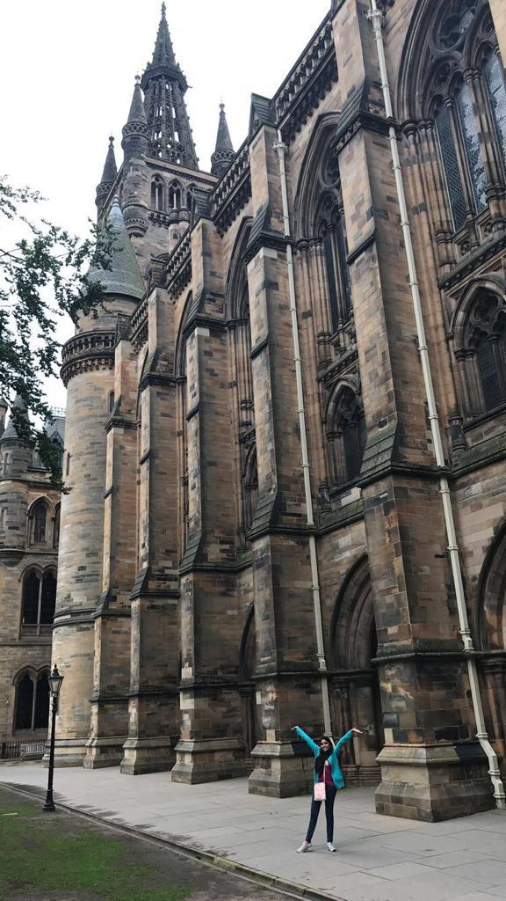
While at Glasgow, I studied at the University of Glasgow. Being one of the places that inspired the look of Hogwarts, the Potterhead shown in the picture was very happy.
3/13
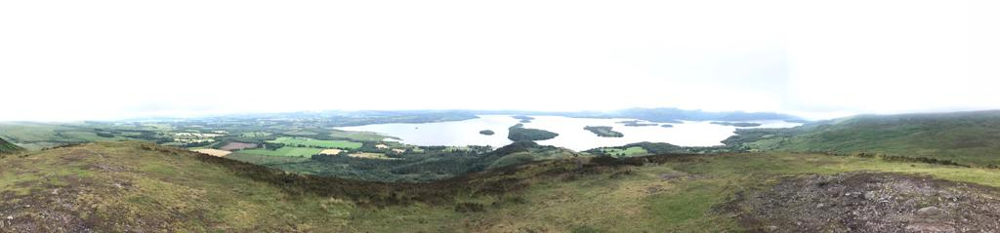
My first hike - I hiked up a hill that looked over Loch Lomond. It was exhausting but the view was so worth it.
4/13
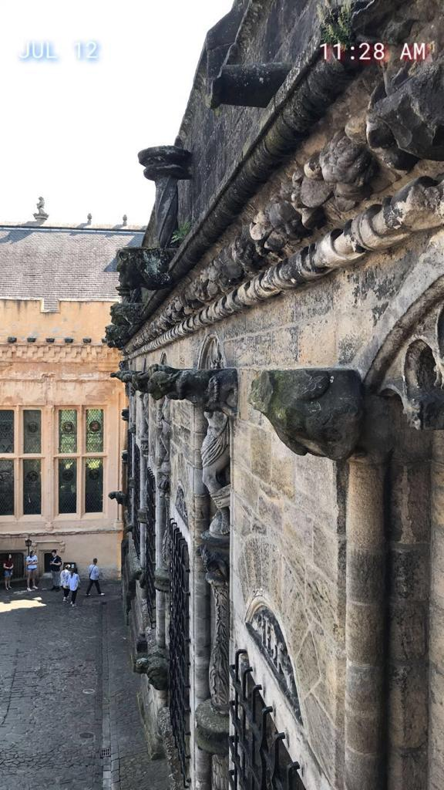
Stirling Castle - the first castle I visited!
5/13
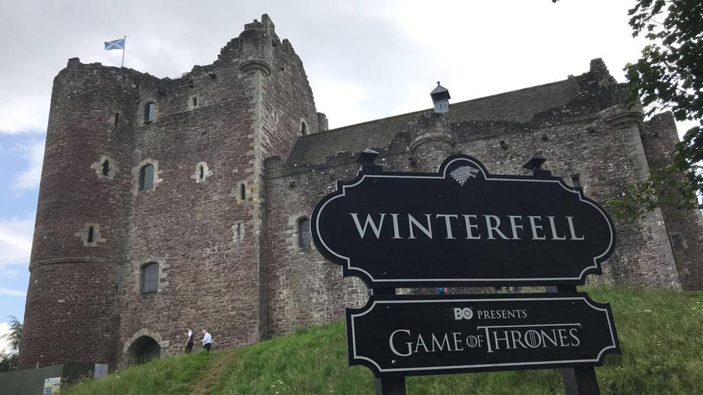
Doune Castle - for all the GoT fans out there, this is the actual castle where they shot the location for Winterfell Castle in the show, Game of Thrones.
6/13
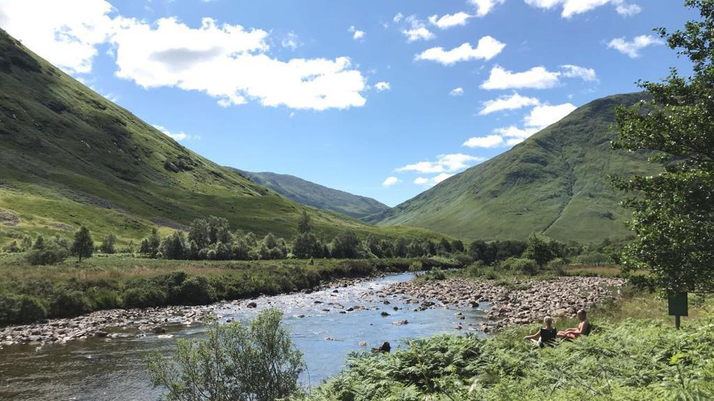
My second hike - Glencoe Valley located in the Highlands
7/13
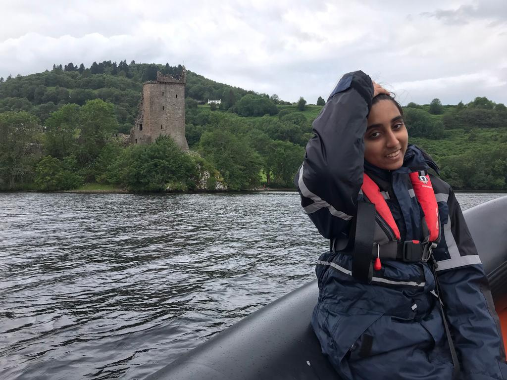
Speedboat ride in Loch Ness!!! Didn't get to see Nessie but I did spot Urquhart Castle.
8/13
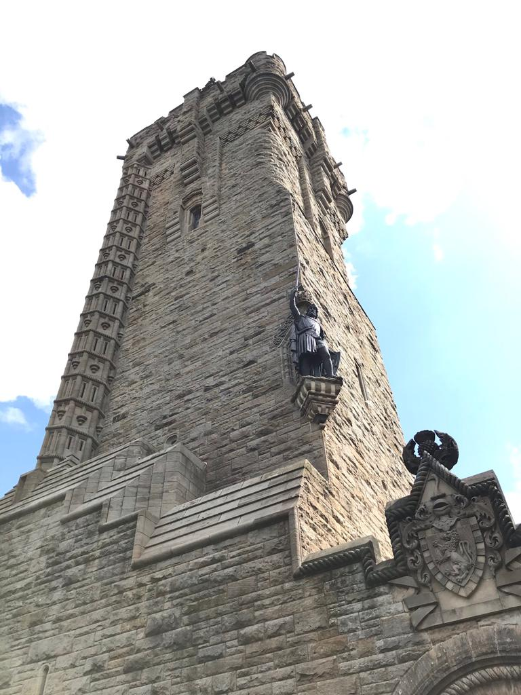
National Wallace Monument - built in honor of William Wallace (the hero from Braveheart)
9/13
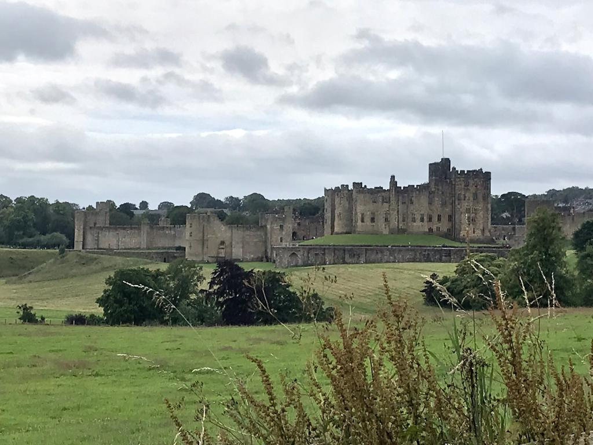
Alnwick Castle - for all the Potterheads out there, this is where they shot a lot of the scenes for the first and second movies of the Harry Potter series. This castle is located in England, just across the Scottish border.
Some parts of Alnwich Castle the filmmakers used for filming part of the Harry Potter series.
10/13
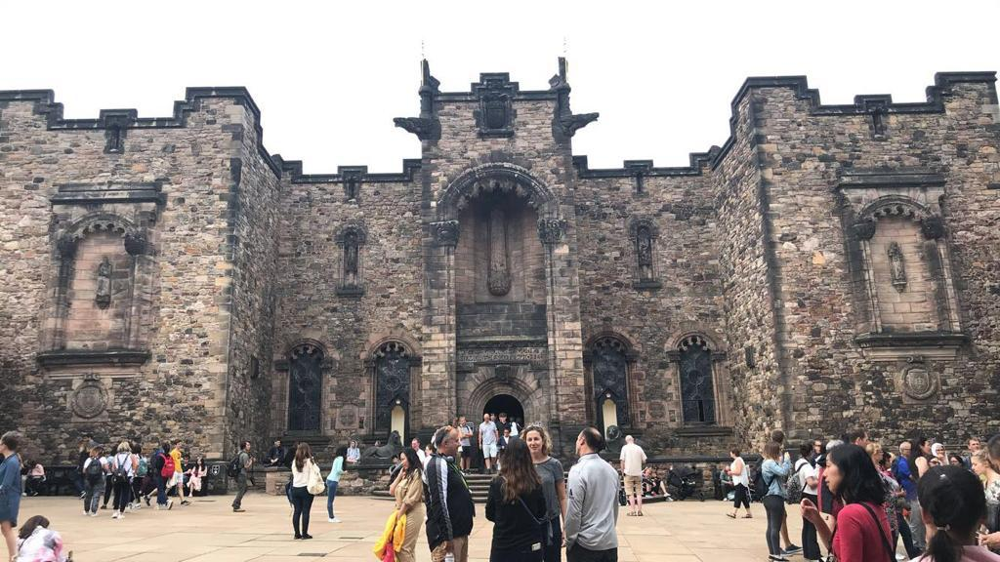
Edinburgh Castle - the castle has so many buildings within the royal compound. This building is one of most recent ones built in honor of the Scots who fought during WWI and WWII.
11/13
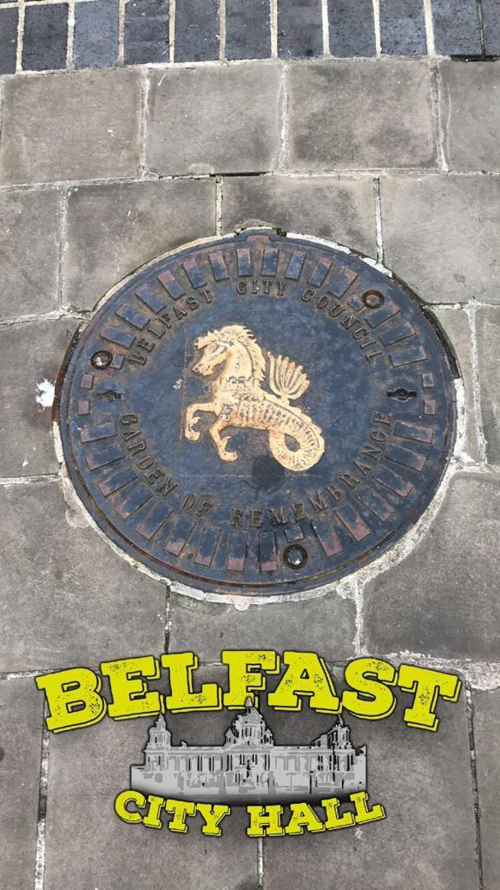
Belfast, Northern Ireland - this is the symbol of Northern Ireland.
12/13
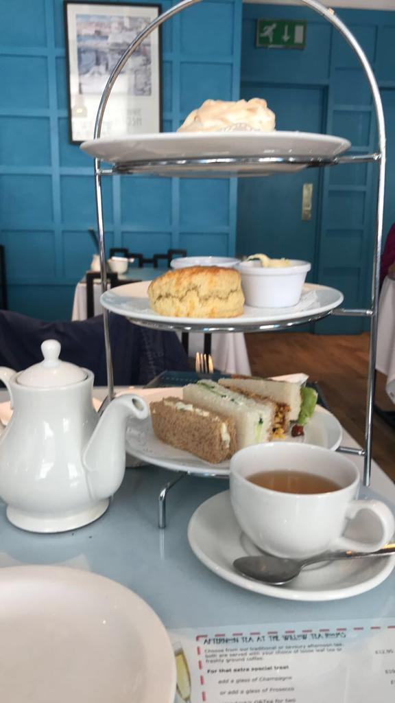
My last day in Scotland was spent having some Afternoon Tea - couldn't leave without doing the most proper thing to do in the UK!
13/13
Before I knew it, the month had whizzed by and it was time to go home. Scotland was a blast and I would definitely love to come back some day!